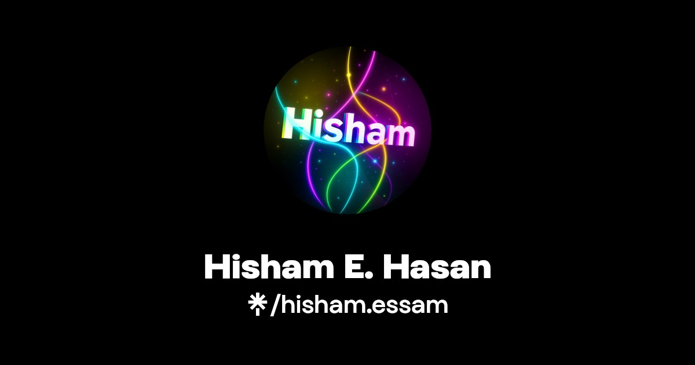

Research & Data
- Research design
- Survey development
- Biostatistics
- R, SPSS, GraphPad Prism
- Mendeley & EndNote
Pharmaceutical Science · Scientific Software · Digital Health
Pharmaceutical Scientist & Healthcare Technology Developer
I translate complex scientific, laboratory, research and healthcare workflows into practical digital systems—connecting pharmaceutical expertise with software development, ethics and quality.
About Me
I am a clinical pharmacist, biomedical ethics researcher, and healthcare quality professional working at the intersection of clinical care, research integrity, regulatory documentation, and digital health innovation. My work is driven by a simple philosophy: technology should improve healthcare only when it is evidence-based, ethically governed, and designed around patient-centered outcomes.
Across research, teaching, quality systems, and regulatory writing, I translate complex scientific information into clear decisions, structured documentation, and practical educational experiences. I am especially focused on AI in healthcare, pharmacy practice transformation, biomedical ethics, and responsible digital adoption across the MENA region and beyond.
Skills
Projects
Software Portfolio
Twelve research, laboratory and organizational software projects in different stages of development and evaluation. Repository links may require GitHub access while source code remains private. These are not represented as validated clinical or GxP production systems.
Scientific documentation, study organization, rich-text notebook entries, review workflows and record traceability.
Scientific evidence management, PICOTS frameworks, data suitability evaluation and independent review traceability.
Analytical calculations, statistical evaluation and laboratory method-validation workflows.
Prototype for structured clinical ethics case assessment, deliberation and documentation.
Team workload visibility, laboratory tasks, project monitoring, instrument workload and QA review.
Risk-based supplier assessments, qualification records, requalification and oversight.
Purchase requests, approval workflows, chemical and reference-standard inventory, and suppliers.
Sample registration, acceptance decisions, chain of custody, storage and service requests.
Equipment asset records, maintenance ticketing, calibration plans and calibration event API.
Computational medicinal chemistry and cheminformatics research project; full source incorporation is in progress.
Responsive application directory and internal workspace launcher.
Workplace feedback, concerns and suggestions with case tracking and management follow-up.
Looking for professional consulting, training or scientific services instead of a technical portfolio?
Explore Hisham Nexus ↗Investigated ethical challenges, readiness, and perceptions around artificial intelligence integration in pharmacy education and professional practice across MENA contexts.
Developed and analyzed research exploring the perceived clinical and ethical impact of digital transformation in healthcare and research environments.
Contributed to structured regulatory documentation for generic products, including clinical overview preparation, literature synthesis, and benefit-risk interpretation.
Supported regulated laboratory operations through QMS documentation, audit readiness, ISO/IEC 17025 alignment, training follow-up, and cross-functional coordination.
Designed lectures, slides, training materials, and applied learning experiences for pharmacy, research ethics, biostatistics, critical thinking, and regulatory affairs.
Professional Highlights
My work combines academic excellence, ethical reasoning, scientific research, quality systems, teaching, public scholarship, and digital communication. These highlights summarize the foundations that shape my portfolio, services, and long-term professional direction.
Completed advanced graduate training in biomedical ethics with a focus on research ethics, clinical trials, AI in healthcare, public health policy, and ethical decision-making in complex healthcare contexts.
Authored and contributed to peer-reviewed work across AI in healthcare, pharmacy practice, digital transformation, biomedical ethics, ChatGPT in research, pharmacotherapy, and pharmaceutical science.
Worked across regulated healthcare and laboratory environments, supporting QMS implementation, controlled documentation, audit readiness, accreditation workflows, and international compliance standards.
Developed lectures, training materials, educational slides, and applied learning experiences across clinical pharmacy, pharmacology, research ethics, biostatistics, critical thinking, and regulatory affairs.
Communicates research through accessible posts, research stories, and professional platforms, translating complex topics in AI, ethics, digital health, and pharmacy practice into clear insights for broader audiences.
Recognized through academic honors, research participation, poster awards, professional certificates, volunteering, and continuous learning across healthcare, research, communication, and design.
Services
Research design, survey development, literature review, data interpretation, manuscript review, and academic presentation support.
Learn MoreClinical summaries, CTD support, evidence synthesis, clinical pharmacology content, benefit-risk documentation, and writing templates.
Learn MoreQMS documentation, SOP review, audit readiness, ISO/GLP/GMP/GDP-aligned workflows, and compliance-focused training.
Learn MoreWorkshops, course materials, presentation design, AI in healthcare training, research ethics education, and critical thinking development.
Learn MoreDigital resources, PDFs, templates, and mini-guides will be added gradually. For now, you can request a specific resource or collaboration through the contact section.
Beyond Work
Beyond research, clinical practice, and quality systems, I am deeply shaped by curiosity, imagination, and storytelling. I am drawn to narratives that explore ethics, identity, time, mystery, courage, and human choice — themes that also influence how I think about healthcare, technology, education, and patient-centered innovation. This creative side helps me communicate complex ideas with clarity, empathy, and emotional intelligence.
I value stories that expand perspective, challenge assumptions, and explore the human side of science, ethics, and decision-making.
Mystery-driven narratives strengthen the way I observe patterns, question evidence, and approach complex problems with curiosity and structure.
Film and visual storytelling inspire how I design presentations, explain ideas, and communicate scientific concepts in a way that feels memorable and human.
Story-driven games interest me because they combine strategy, consequence, emotion, and choice — elements that mirror real-world problem-solving.
I am constantly exploring new tools, ideas, technologies, and disciplines, always working toward a sharper, more thoughtful version of myself.
My working style is reflective, focused, and deeply committed. I value progress that is consistent, meaningful, and built with care.
For me, creativity is not separate from science — it is one of the ways science becomes understandable, ethical, and human.
Career Objective
My objective is to contribute to healthcare, academic, regulatory, and digital health initiatives where clinical expertise, ethical reasoning, quality systems, and technology improve decisions, strengthen trust, and create measurable impact.
Contact
Use the form below to open an email draft, or connect through professional channels.

Explore my professional profiles, publications, social links, and contact options.
Open Link Hub ↗